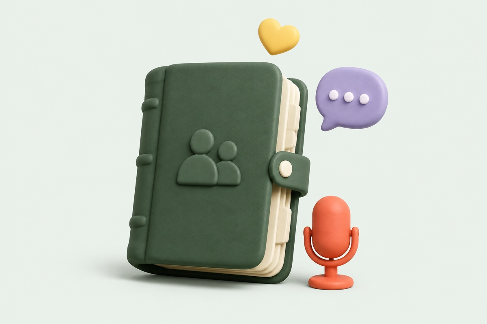

1
Say it while it’s fresh.
Just met someone? Take a moment to talk about it. No forms to fill. No perfect words needed.
Try a voice noteTheir new job. That big move. The way they take their coffee. Remember what matters about the people who matter to you.
A little space between your last conversation and your next one. That’s where One Call Away comes in.
Just met someone? Take a moment to talk about it. No forms to fill. No perfect words needed.
Try a voice note
2Your note becomes clear, useful memories, organized by person. Check, edit, and save what feels right.
Explore your memories 3
3Before you meet again, get a little context. Less “remind me.” More “how did it go?”
Meet your remindersYou don’t need a score to tell you who matters. Just a little help remembering the things you already care about.
Review every detail before it becomes a memory.
Helpful reminders. No feeds or relationship rankings.
No streaks to keep. No guilt if life gets busy.
From your first voice note to your next conversation. Explore all eight screens in our Android concept.
Explore the Android appOne Call Away is coming to Android. Join the waitlist and be the first to give your memory a little backup.
No. You record your own voice note after a conversation, in your own words. You review the details before saving them.
We’re preparing the Android beta. Join the waitlist for updates, or explore the interactive prototype above right now.
The first-note experience is designed to work without an account. You can try the browser prototype without signing in.